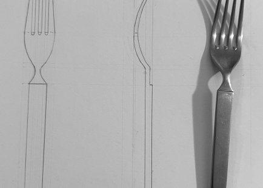
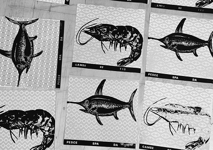
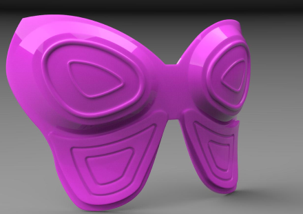
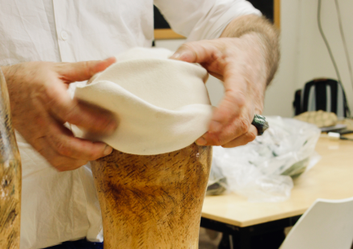

Projects

Lab di Comunicazione Grafica
Presentazione di diversi manifesti comunicativi.

Disegno del prodotto
Disegno tecnico del prodotto industriale .

Workshop universitario
Corso di serigrafia,lavorazione classica.

Progettazione 3D
Realizzazione di una protettezione toracica in 3D.

Disegno tecnico in vettoriale.
Messa in tavola dell’oggetto in vettoriale.

Workshop universitario
Realizzazione del capello in feltro.